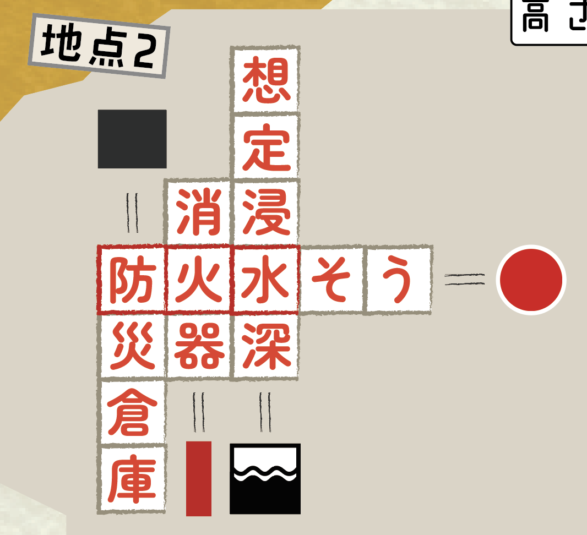

冊子の謎
地点1の謎
ヒント①
問題文の意味を考えてみよう
ヒント②
「こまえだけ よめ」ということは「こ」の「まえ」を読むといいみたいだ
ヒント③
問題文に含まれている「こ」の一つ前の平仮名だけ読んでみよう
答え
答え『ほうこく』
地点2の謎
ヒント
公園の中にある防災関連の物を探してみよう
ヒント②
見つけた防災関連の物の、色と形に注目してみよう
ヒント③
冊子に書いてある図形と同じ色と形をしているものはないかな
ヒント④
パズルのマスは、このように埋まるよ
ヒント⑤
パズルの赤い枠に囲われた文字を、右にある赤い枠に書き写そう
ヒント⑥
赤い枠の上にある赤い丸には、それぞれの漢字の読み仮名が入るみたいだ
ヒント⑦
漢字の読み仮名「ぼうかすい」を、矢印の順序に並べ替えてみよう
答え
答え『かいぼうず』
地点3の謎
ヒント①
表彰台にあるマスに、当てはまる物の名前を書こう
ヒント②
2番目と3番目の物は、せせらぎの東側にあるよ
ヒント③
1番目の物は、せせらぎの両端にあるみたいだよ
ヒント④
表彰台のマスには、1位から順番に「せせらぎ」「りす」「つつじ」が入るよ
ヒント⑤
表彰台の意味を考えてみよう
ヒント⑥
表彰台に書いてある数字に意味がありそうだ
ヒント⑦
1位に書いてある「せせらぎ」の一文字目、2位の「りす」の二文字目と読んでいくと言葉になりそうだ
答え
答え『せすじ』
地点4の謎
ヒント①
3つある鳥居のうち、岩戸八幡神社のいちばん手前にある鳥居と同じものからスタートしよう
ヒント②
迷路を辿ると「うしからたこまでたどれ」となるよ
ヒント③
迷路にある「うし」からスタートして「たこ」に向かおう
ヒント④
うしからたこまで辿ると「たからのあいだよめ」となるよ
ヒント⑤
「たから」に挟まれた平仮名が答えだよ
答え
答え『うで』
地点5の謎
ヒント①
土屋塚古墳の説明をよく観察しよう
ヒント②
土屋塚古墳の説明には、出土したハニワの画像があるね
ヒント③
ハニワの画像と同じ形のハニワが、冊子にもあるみたいだね
ヒント④
丸と正方形の穴が空いたハニワを掘り出そう。掘り出す途中にあるひらがなを読むと答えになるよ
答え
答え『しんそう』または『そうしん』
地点6の謎
クロスワードヒント①
今までに手に入れたカギを確認しよう
クロスワードヒント②
カギと点線で囲われたエリアのイラストを、クロスワードに全て入れよう
クロスワードヒント③
一番下の横の列は、6文字入るみたいだから「いちもくさん」が入りそうだね
クロスワードヒント④
イラストはそれぞれ「あんこう」「いしかわ」「いも」「うし」「おわり」「かのん」「きん」「こいん」「のり」「みいら」「よん」を表しているよ
クロスワード答え
クロスワードは、このように埋まるよ

川崎から世田谷ヒント①
実際に川崎市から世田谷区まで歩くのは無理そうだ。他の方法はないかな？
川崎から世田谷ヒント②
クロスワードは6×6の36マスだね。市役所に36マスに区切られた物はないかな？
川崎から世田谷ヒント③
狛江市案内図が、ちょうど36マスで区切られているみたいだ
川崎から世田谷ヒント④
狛江市案内図に、川崎市と世田谷区と書いてあるマスがあるね
川崎から世田谷ヒント⑤
その2つのマスを、川崎から斜め右上の世田谷に、最短距離で通ってみよう
最後の答え
答え『ちいきのわ』